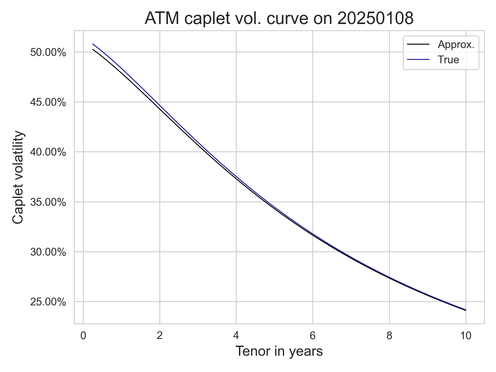
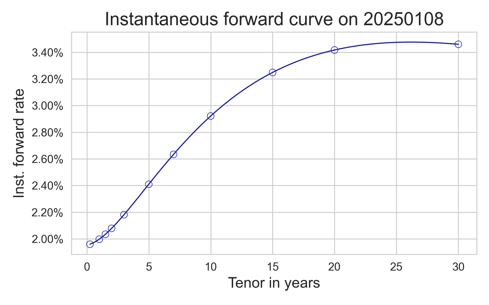
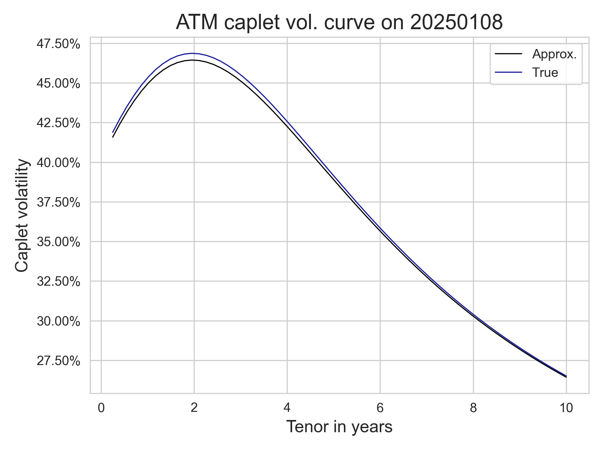
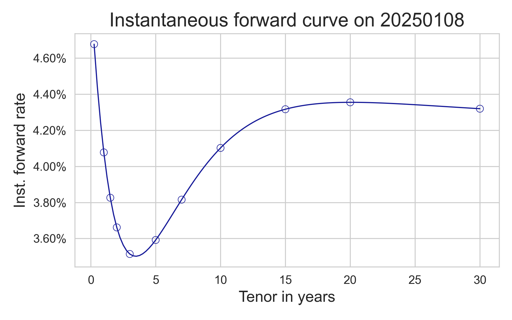

The Black model is a well-known model for the dynamics of stock or other non-negative processes, which assumes that we are interested in the evolution of the forward, and proposes dynamics of the form $df =\sigma_B f dW$. It is widely used as a quoting tool, since for a given forward $f$, time to maturity $\tau$ strike $K$, and quote $Q$, we can always find a unique $\hat\sigma > 0$ such that $$Q = f\,\Phi(z_+) - K\, \Phi(z_-) $$ where $\Phi$ is the standard normal CDF, and $z_{\pm} = \frac{z}{v} \pm \frac{v}2$ with $K = f\, e^z$ the log-moneyness and $v = \sqrt{\tau} \hat\sigma$; the right-hand side of the display is of course the price of a call in the Black model above. In other words, instead of quoting $Q$, market participants will quote $v$ or $\hat\sigma$ instead.
The dynamics of bond prices in certain short-rate models, such as the Hull--White model, is log-normal, and one can find a Black-like closed formula to price caplets, which depend on the tenor of the underlying zero bond and model parameters. In this post, I will explain how to translate from Black to Hull--White caplet volatility and obtain a relatively accurate estimation.
The simplest Hull--White model is a one-factor short rate model. Recall that the short rate $r(s)$ is defined by requiring that $$-\log P(t,T) = \int_t^T r(s)ds\quad\text{ for $t\leqslant T$},$$ where $P(t,T)$ is the price at time $t$ of one unit of currency delivered at time $T$. It is a theoretical construct that is not directly observable but is otherwise very useful (much like local volatility or instantaneous volatility is not observable but useful to define model dynamics). The SDE driving this model is $$ dr(t) = \kappa(t) (\theta(t) - r(t)) dt + \sigma(t) dW(t) $$ so that $r(t)$ is a Gaussian process. All the calculations that follow are contained in this paper by Christian Fries. The main functions we need are the following $$ \begin{aligned} E(t) &= \exp \int_0^t \kappa(s)ds, \\ B(t,T) &= E(t) \int_t^T E(s)^{-1}ds, \\ V(t,T) &= E(T)^{-2}\int_t^T \sigma(s)^2 E(s)^2 ds,\\ W(t,T) &= \int_t^T \sigma(s)^2 B(s,T)^2 ds. \end{aligned}$$ I will use the notation $E(t,T) = E(t)/E(T)$ like Fries does. With it, it is not difficult to solve the SDE assuming knowledge of $\theta$, $\kappa$ and $\sigma$: we can show directly that $$r(t) = r(0) + \int_0^t E(u,t) \theta(u)du + \int_0^t E(u,t) \sigma(u)dW(u).$$
One basic property that the model must have is matching the current discount curve we observe in the market, which we will think as encoded by the instantaneous forward $f(0,t)$. As the paper of Fries shows, this can be achieved by selecting $\theta(t)$ to satisfy $$\theta(t) = \frac12 \kappa(t)v'(t) + \frac 12 v''(t)$$ where $v(t) = W(0,t)$. Put in another way, we want $$ \int_0^t E(u,t)\theta(u) du = \frac{1}{2} v'(t)$$ which is quite useful: it says that $$r(t) = x(t) + f(0,t) + \frac 12 v'(t)$$ where $x(t) = E(t)^{-1}\int_0^t \sigma(s)E(s) dW(s)$. This follows, for example, from the fact that the expected value of $r(t)$ in the $t$-forward measure is $f(0,t)$. The conclusion: in the numéraire measure, $r(t)$ is Gaussian with mean equal to $f(0,t) + \frac 12 v'(t)$ and variance $V(0,t)$. Another useful takeaway of this is we can write the numérarire $N(t) = \exp \int_0^t r(s)ds$ explicitly: $$ N(t) = \frac 1{P(0,t)} \exp\left(\frac{1}{2}v(t) + y(t)\right) $$ where $y(t)$ is normal with zero mean and variance $W(0,t)$. The pair $(x,y)$ is Gaussian, and it is easy to compute the covariance structure, because $\mathbb E(x(t)y(t))$ is just the derivative of $\frac 12\mathbb E(y(t)^2)$.
The computation of dynamics for $P(t,T)$ is slightly less straightforward, so I will spare readers the details. The result is that $P(t,T)$ is explicitly computable, and that $P(t,T)$ has log-normal volatility equal to $\Sigma(t,T) = -\sigma(t)B(t,T)$. This is enough for us to price options on zero bonds in this model.
The interest rate market offers and quotes several derivative instruments, but in order to keep the post short, I will only focus on options on simpler payoffs: options on zero coupon bonds, and caplets on discount forward rates, that is, forward rates implied by a fixed discount curve. I will also ignore issues of funding and spreads between IBOR rates and risk free rates (RFRs). Given a discount curve $T\mapsto P(t,T)$ at some time $t$, the let us put $$ f_\tau(T; t) = \frac1{\tau} \left(\frac{P(t,T)}{P(t,T+\tau)}-1\right). $$ This is the fair (or "par") forward rate for the following transaction: deposit one unit of currency at time $T$, to be repaid at time $T+\tau$ and discounted using the curve above at time $T$; in other words, we say that the transaction fixes at time $T$. For a notional amount $N$, the price at time $t$ of such agreement with strike rate $k$ is $$ \tau N (f_\tau(T;t) - k).$$
A caplet is an option on the above transaction, so its payoff at time $T+\tau$ is $\tau N (f_\tau(T;T) - k)^+$, where $(-)^+$ denotes the positive part of a number. Since it is obviously possible to rewrite the payoff of the caplet using bond prices, it is not surprising that the price of a such caplet equals $(1+\tau k)$ times the value of a put on the zero bond maturing at time $T$ and deliverying at time $T+\tau$. The strike for this put is $k' = \frac{1}{1+\tau k}$, which is the bond price consistent with the strike $k$. So how do we price options on zero bonds?
We can price an option on a zero bond by using the forward process $f(t) = \frac{P(t,T+\tau)}{P(t,T)}$ for which $f(T) = P(T,T+\tau)$. This is denominated in $P(t,T)$ so in the $T$-forward measure, it is a martingale. We know the log-volatility of both the numerator and denominator, so the volatility we get is just the difference $-\sigma(t)(B(t,T+\tau) - B(t,T))$. Since the process is log-normal, usual Black--Scholes computations tell us that we just need to compute the term variance of the above volatility, which is just $v = V(t,T) B(T,T+\tau)^2$. So we know how much the option on a dollar costs (without discounting), where $z_\pm$ is defined as before, with the $v$ we just computed: $$ \mathsf{ZeroCall}_\tau(t,T,k') = f(t) \Phi(z_+) - k' \Phi(z_{-}).$$
For this part, we follow the very well known book Interest Rate Models - Theory and Practice by Brigo and Mercurio, specifically Section 3.6 (at least in my edition) for the story around caplet volatility. Let us focus on at-the-money (ATM) caplets, where as before we focus on "discount" caplets, that is, following some discounting curve we have built. What we have computed is that the Hull--White price of an ATM discount caplet with maturity $T$ and delivery $T+\tau$ is given by $$ \mathsf{HullWhiteCapletATM}_\tau(T; t) = P(t,T) \left( 2\Phi\left(\frac{\sigma_{\mathsf{HW}}}2\right) -1 \right) $$ where $\sigma_{\mathsf{HW}}^2 = V(t,T)B(T,T+\tau)^2$. This looks promising, in particular since we can invert this quite straightforwardly.
On the other hand, the market likes to quote prices using a different (Black) volatility, which we can also compute. Of course, under the Black model, the price of a $T$ maturity $T+\tau$ delivery caplet with strike $k$ is given by the Black formula $$ \mathsf{BlackCaplet}_\tau(T,k,\sigma_{\mathsf{B}};t) = P(0,T+\tau) \tau \left( f(t) \Phi\left( z_+ \right) - k \Phi\left( z_{-}\right) \right), $$ where $z_\pm = \frac{z}{\sigma_{\mathsf{B}}} \pm \frac{\sigma_{\mathsf{B}}}{2}$, $z = \log \frac{f(t)}K$. In the case where the option is at-the-money, we get $$ \mathsf{BlackCapletATM}_\tau(T;t) = P(t,T+\tau) \tau f_\tau(T;t) \left(2\Phi\left(\frac{\sigma_{\mathsf{B}}}2\right) -1\right). $$ This is great, as we can now translate the quoted Black volatility to our model volatility quotes. From our diligent computations, we see that in a Hull--White model, the discount caplet term volatility $\sigma_{\mathsf{B}}$ is the unique solution to $$ P(0,T+\tau)\tau f \Psi(\sigma_{\mathsf{B}})= P(0,T) \Psi(\sigma_{\mathsf{HW}}) $$ where $$ \Psi(z) = 2\Phi\left(\frac z2\right) - 1, \qquad \sigma_{\mathsf{HW}}^2 = V(0,T)B(T,T+\tau)^2. $$ When this solution exists, we have that the caplet volatility (term normalized, with $t=0$) is given by $$\widehat\sigma_{\mathsf{B}} \approx \frac{1+\tau f}{\tau f} \frac{\sigma_\mathsf{HW}}{\sqrt{T}} = \sigma_0\left(1 + \frac 1{\tau f}\right) \frac{1-e^{-\tau \kappa}}{\kappa}\sqrt{\frac{1-e^{-2\kappa T}}{2\kappa T}} $$ where the last equality is only valid for a constant coefficient Hull--White model with parameters $(\sigma_0, \kappa)$. From this we see that in the constant-parameter case, the shape of this curve is mostly dictated by the shape of the forward curve $f$. When $f$ is constant, the ATM volatility caplet structure is strictly decreasing.
To get some examples, let us consider the instantaneous forward curve built by the ECB for 2026-01-08, using a well-known parametric curve model, as in the table below. We also consider an alternative set of parameters that gives a curve resembling the USD term structure. For the European curve, we used $\sigma = 1\%$ and $\kappa = 8\%$, we used $\sigma = 2\%$ and $\kappa = 16\%$ for the modified curve; in both cases, we set $\tau$ to 3m, which is a usual tenor for caplet forward rates. As you can see, the approximation is pretty good, and the error is only within a few basis points of the true quote computed using normal CDF and PPF functions. The approximation will of course degenerate if the short-rate volatility is higher, which makes the Taylor expansion not so effective!




Opinions expressed here are mine, and any material is provided for informational purposes only and should not be interpreted in any other way. All information discussed here is derived from publicly available sources and does not include any confidential, proprietary, or non-public information. Mention of specific firms, products, securities or assets, for example for illustrative purposes, does not imply sponsorship or approval of such firms, products, securities or assets.